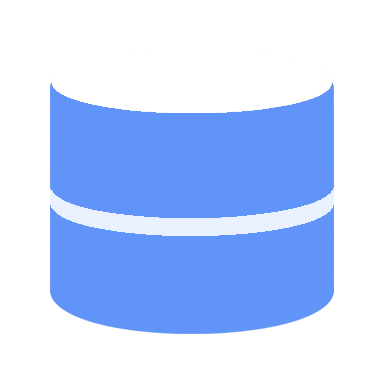
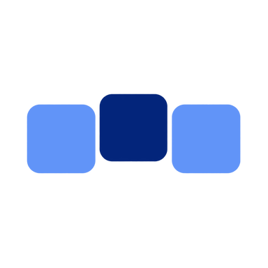
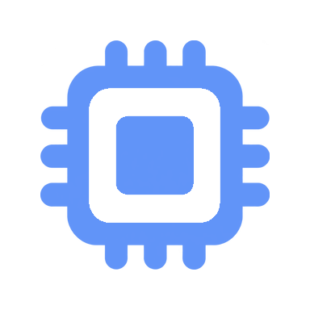
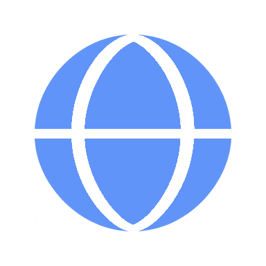

CS 전공 개념을
휴대폰에서 차곡차곡
자료구조부터 네트워크까지 40문항을 짧은 해설로 읽고, 어려운 개념은 시뮬레이션으로 움직여 봐요.
시작하기데이터베이스 · Transaction
Transaction을 간단히 설명해 주세요.
랜덤 질문
네트워크 · HTTP
2HTTP request method 중 GET vs POST를 비교 설명해 주세요.
답은 가려져 있어요
과목 진도
읽음 17 / 40
Transaction을 간단히 설명해 주세요.
2약 4분 · 꼬리질문 2

먼저 떠올려 보세요
핵심을 한두 문장으로 정리해 본 뒤 답을 열어 보세요.
트랜잭션은 하나의 논리적 작업을 이루는 쿼리들의 묶음으로, DB 상태를 바꾸는 최소 작업 단위이다. 전부 성공하거나 전부 취소되어야 하고, 이를 ACID(원자성, 일관성, 고립성, 지속성)로 보장한다.
예시: 콘서트 좌석 예매
좌석을 확정하는 쿼리와 결제 내역을 남기는 쿼리가 있다. 좌석만 확정되고 결제 기록이 사라지면 데이터가 어긋난다.
두 쿼리는 쪼갤 수 없는 한 작업이라서, 둘 다 반영되거나 둘 다 없던 일이 되어야 한다. 이 묶음이 트랜잭션이다.
필요한 이유
- 장애가 나도 어디까지 반영됐는지 기준 단위가 있어 복구할 수 있다.
- 여러 작업이 같은 데이터를 동시에 만져도 서로 간섭하지 않도록 분리할 수 있다.
START TRANSACTION;
UPDATE seat SET status = 'SOLD'
WHERE seat_id = 'A-12';
INSERT INTO payment (seat_id)
VALUES ('A-12');
COMMIT;ACID
- Atomicity(원자성) 작업이 전부 수행되거나 전혀 수행되지 않는다.
- Consistency(일관성) 끝나면 DB가 정의된 규칙을 만족해야 한다.
- Isolation(고립성) 동시에 실행되는 트랜잭션이 서로의 중간 결과를 보지 못한다.
- Durability(지속성) 커밋된 결과는 장애가 나도 사라지지 않는다.
동시성 제어와 갱신 손실
두 트랜잭션이 같은 값을 읽고 각자 고친 뒤 쓰면, 나중에 쓴 쪽이 먼저 쓴 쪽의 결과를 덮어써서 한 번의 갱신이 사라질 수 있다. 이를 갱신 손실이라고 한다.
꼬리질문 2
아직 쌓이지 않았어요
읽음으로 표시과목 진도
읽음 1718 / 40

자료구조읽음 10 / 12헷갈림 2
운영체제읽음 4 / 10헷갈림 1 데이터베이스읽음 34 / 9
네트워크읽음 0 / 9자주 나온 질문
전체 20TCP/IP
TCP 3-way, 4-way handshake
직접 해 보기
연결 수립에서 두 쪽의 시작 번호를 넣어 보세요.
Multi process/thread 환경에서 동기화 문제를 어떻게 해결하나요?
1약 4분 · 꼬리질문 1
공유 자원에 동시에 접근하면 실행 순서에 따라 결과가 달라지는 race condition이 생기므로, 임계 구역을 lock으로 보호한다. 한 번에 하나만 들어가게 하면 mutex, 정해진 개수까지 허용하면 semaphore이다.
동기화 문제는 왜 생기는가
likes++ 한 줄은 CPU 눈에는 한 동작이 아니다.
- 메모리에서
likes값을 register로 읽는다 (load) - register 값을 1 증가시킨다
- 결과를 메모리의
likes에 되쓴다 (store)
자료구조
헷갈림 2Array & Linked List · 4
3문항
이해했다면 질문 아래에서 헷갈림을 꺼 주세요
첫 문항부터 다시 읽기답은 가려 두고, 먼저 떠올려요
답은 가려 두고, 먼저 떠올려요
질문만 보고 핵심을 한두 문장으로 떠올려 보세요. 답 보기를 누르면 그때 열려요.
읽은 만큼 칸이 차요
답은 단락으로 나뉘어 있어요. 내려 읽으면 위의 칸이 하나씩 차고, 닫았다 열어도 읽던 단락에서 이어져요.
다 읽은 질문은 블록으로 쌓여요
과목마다 탑이 하나씩 있어요. 한 문항을 끝까지 읽을 때마다 한 칸씩 올라가요.
글로 어려운 건 움직여 봐요
TCP 연결처럼 순서가 있는 개념은 시뮬레이션으로 한 단계씩 넘겨 봐요. 값을 직접 넣어 볼 수도 있어요.
헷갈린 것만 다시 모아요
읽다가 헷갈려요를 눌러 두면, 목차에서 헷갈림만 골라 다시 읽을 수 있어요.
네 과목, 40문항
질문 하나가 블록 한 칸이에요. 끝까지 읽은 질문은 칸이 파랗게 차요.
자료구조
Array와 Linked List, Queue와 Stack, Hash table과 BST
운영체제
Process와 Thread, Memory
데이터베이스
DB 구조와 설계, Transaction, Index
네트워크
TCP/IP, HTTP, Authorization